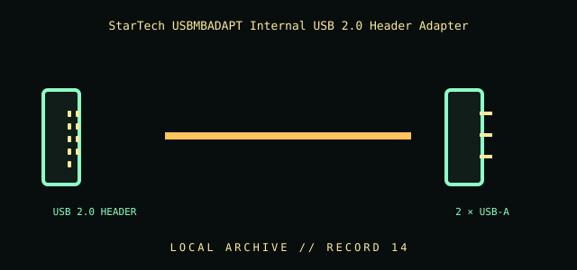

[ INDIVIDUAL COMPONENT // CABLES & ADAPTERS ]
StarTech USBMBADAPT Internal USB 2.0 Header Adapter
An internal USB 2.0 header adapter exposing two USB-A receptacles from a motherboard header for compatible internal/front-panel assemblies.

IDENTIFICATION / SAFETY: Match the complete part number, connector direction, host requirements, and revision to manufacturer documentation. A matching connector shape is not proof of protocol or electrical compatibility.
Specifications
| Catalog subcategory | Internal front-panel cables |
|---|---|
| Catalog identity | StarTech.com USBMBADAPT motherboard USB 2.0 header to dual USB-A adapter |
| Protocol / standard | StarTech model USBMBADAPT; internal motherboard USB 2.0 header to two USB 2.0 Type-A receptacles. Connector and pin assignment should be checked against the board manual and product revision. |
| Connector ends | USB 2.0 HEADER → 2 × USB-A; direction and gender are specified where the manufacturer source verifies them. |
Compatibility & electrical hazards
Use only with a matching USB 2.0 motherboard header; never connect to an IEEE 1394/FireWire header even if it appears physically similar. Confirm key orientation and the board’s USB header pinout before installation. The adapter does not change USB data rate or provide a substitute for a correctly rated power harness.
Archival & handling notes
Label both motherboard-header and receptacle ends and retain the motherboard manual reference. Inspect header orientation and pin alignment before seating; remove gently by the connector body rather than the wires.
For collection records, photograph both connector faces and all labels; record manufacturer, complete SKU, revision, provenance, condition, and the source document used for identification. Do not apply power to an unidentified or damaged cable.
Sources & further reading
- StarTech — USBMBADAPT internal motherboard USB adapterManufacturer identifies the internal USB 2.0 header and dual-port arrangement.
- USB-IF — USB specifications and documentsPrimary source for USB 2.0 interface specifications; motherboard header implementation is board-specific.
Source values are limited to the linked manufacturer or standards documentation. Features not stated there are intentionally left unspecified; confirm the exact cable revision and host-device manuals before use.